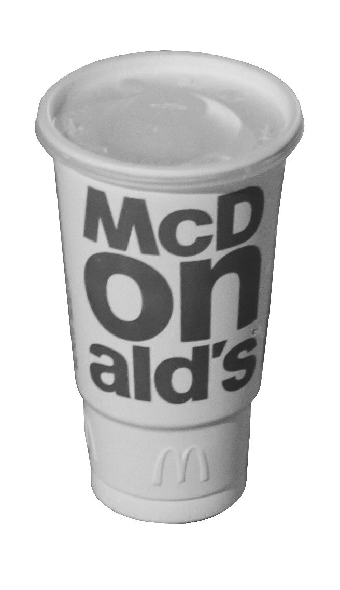
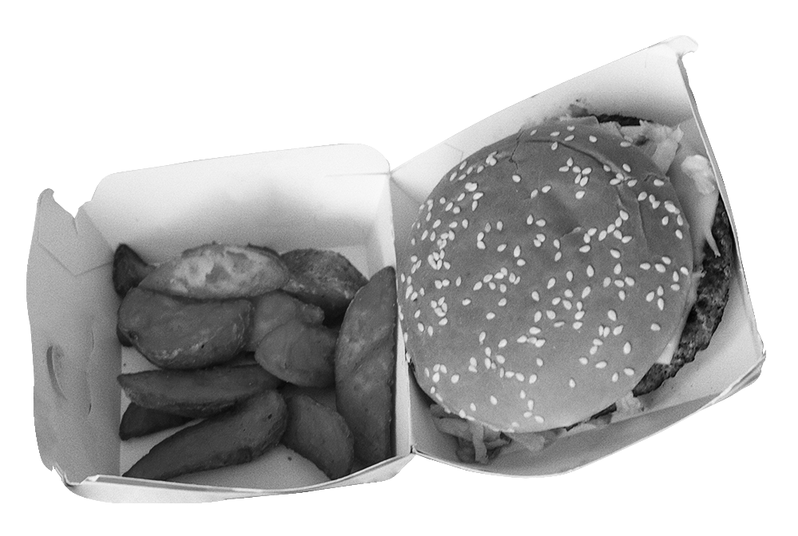
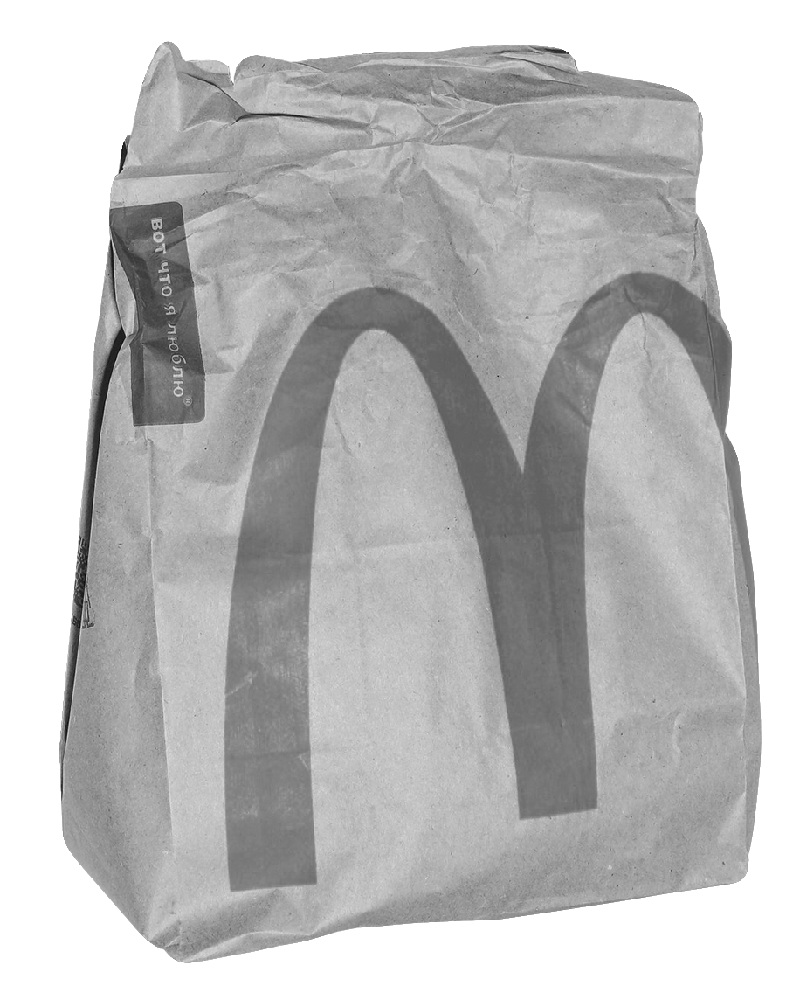
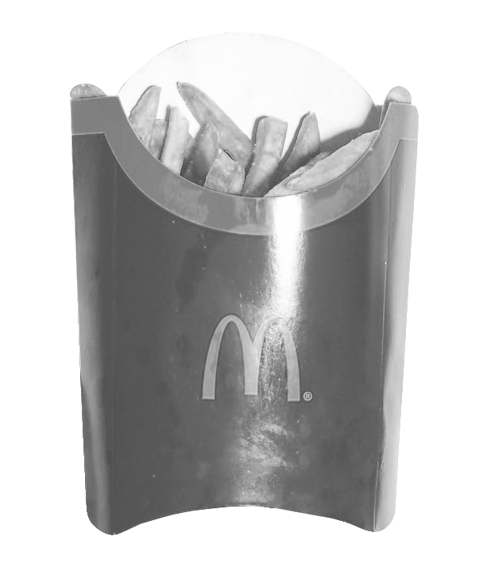

ИВАНОВСКИЙ
ГОСУДАРСТВЕННЫЙ
УНИВЕРСИТЕТ
2021 STUDENЬ
РАБОТА В
#
ЧТО? ГДЕ? КОГДА?
ЕКАТЕРИНА РЫБАНОВА / 01.10.2021
   СВЕТЯЩУЮСЯ ЖЕЛТЫМ
Вывеску Макдоналдса видно издалека и в любую погоду – она так и
манит: «Заходи – это хорошее место, чтобы посидеть одному или с
друзьями!» И люди заходят, люди что-то покупают, люди сидят и
почти не задумываются, что Макдоналдс для многих в первую
очередь – место работы. И многие студенты выбирают именно его.
Спустя некоторое время Вам позвонит сотрудник отдела кадров, Вы
договоритесь о собеседовании на удобное всем время. В
обязательном порядке Вам нужно прихватить паспорт, полис,
СНИЛС. Собеседование включает в себя разговор с, вероятнее всего,
директором, где Вам могут задать вопросы от вполне конкретных
«На какую позицию Вы хотите обучиться в первую очередь:
прилавок или кухня?» до пространных «Какие у Вас увлечения?»
После этого Ваш путь снова лежит в предприятие, где Вы приступите
к подписи трудового договора – и, поверьте, здесь Вы проставите
столько подписей, сколько не ставили нигде и никогда. До возни с
бумагами или после Вам предстоит просмотреть модуль, который
придет Вам на почту – в нем в игровой форме будут рассказаны
основные принципы работы Макдоналдса.
Оформление медкнижки длится неделю-полторы: пока Вы
дождетесь дня записи, пока результаты будут
обрабатываться…
Пару слов о Вашей «профессиональной» одежде
Обувь Вам предстоит купить самим – черную, закрытую, без
шнуровки, на плоской подошве и нескользкую. Вы можете
купить в стоковых магазинах тапочки рублей за триста, и
они прослужат вам месяц, может, два: оторванная или
стершаяся подошва, сквозные дыры в ней – норма. Вы
можете потратиться и купить обувь в магазине
спецодежды. Стоит дороже, но смысл в этом есть.
1
«Под обувь» можно носить только капроновые носки
только черного или телесных цветов. Пятна от масла Вы
не отстираете – оставьте надежду. За повреждения
формы, несопоставимые с жизнью, или за ее утерю
следует вычет из зарплаты.
3
С выходом на работу Вам предстоит пройти несколько стадий
С самого выхода Вы становитесь стажером
и носите желтый бейджик. Это не влияет
ни на что, кроме снисходительного
отношения к Вам и Вашим ошибкам.
В первые полторы-две недели Вас ждет обучение: в предприятии есть
множество позиций, которые может освоить работник – зал (уборка
подносов, туалетов, полов), напитки, картошка, сбор заказа, выдача заказа,
сбор заказа на МакАвто, прием/оплата заказа на МакАвто, фритюр
(приготовление наггетсов, стрипсов и так далее), гриль (приготовление
говяжьих котлет для бургеров) и линия кухни (там собираются бургеры).
Отдельно рассказывать о каждой позиции нет смысла, но
хочу отдельно обговорить пару важных моментов
Другой пример – в одном предприятии нашего города сотрудник
писал объяснительную за опоздание на одну минуту, в том, в
котором я работала, сами менеджеры говорили, что если что-то
случается, то можно позвонить и предупредить о задержке – и
никаких проблем. Я, опоздав из-за своей невнимательности минут
на 20, так в итоге ничего и не писала.
Реклама работы в Макдоналдсе часто говорит о гибком графике, и
это правда: есть бланк, в который сотрудник записывает свои
временные возможности, включая выходные. Вы можете оставить их
постоянными, можете менять каждую неделю. Также Вы можете
поменяться сменами с другим работником – при условии, что он
обучен на Вашу позицию.
Это физически тяжелая работа – большая часть смены проходит на
ногах без возможности присесть. Есть определенное количество
перерывов (например, отрабатывая 8 часов, у вас их будет три: 30-
минутный и два 15-минутных), но и они не спасают. Спина болит, ноги
ноют и, придя домой, хочется просто свалиться. Но человек ко всему
привыкает. Где-то уже через месяц я ловила себя на мысли: «О, 5 часов
всего работать, могу даже без перерыва». Но это не очень здорово.
Есть условия получения премии – отсутствие
прогулов, больничных и опозданий, выработка
определенного количества часов и 100-
процентные КЛНы – контрольный лист
наблюдения, в котором отмечается порядок
соблюдения процедур на определенной позиции.
Составляют его обычно менеджеры и инструктора, и его
«процентность» иногда зависит отнюдь не от профессиональных
данных – вновь смотрим первый пункт. По поводу совмещения с учебой
– все индивидуально. Кто-то может работать в ночную смену, сразу
после нее – ехать в вуз, и все по кругу, а кто-то не вывозит (например, я).
Напоследок хотелось бы поделиться опытом ДАРЬИ,
менеджера одного из предприятий нашего города:
«Я знаю, что работу и учёбу реально совмещать, если ты к этому
морально готов, у тебя имеется крепкий стержень внутри и ты знаешь,
к чему ты идёшь. Но это очень трудно, когда вся твоя работа строится
на взаимоотношениях с людьми. Люди бывают разные и к каждому из
них нужно находить определённый подход.
Но не всё так мрачно, учась совмещать работу и учёбу, на мой взгляд, в
какой-то степени дисциплинируешь себя, ты знаешь к какому сроку ты
должны сдать задания по учёбе и сдать отчёты на работе. Ты создаёшь
себе план, которому не так трудно следовать, и можешь всего
добиться. Но это в теории.
Я работаю чуть больше, чем раньше и не хочу уходить с работы, потому
что там я ощущаю себя полезной. Но также есть личная жизнь – твоя
семья, родные и друзья, с которыми ты хочешь увидеться и поболтать.
Это для меня очень важно, без разговоров с ними я потеряю саму себя, а
вместе с тем и интерес к работе и учёбе.
На эту тему можно говорить долго, думаю, если бы мне не нравилось что-
либо делать, я бы всё давно забросила и пошла пробовать себя в чём-то
другом. Если я взяла на себя ответственность учиться и работать, значит
нужно вести себя серьёзно, осознавая, что в любом деле есть свои
минусы и плюсы, и нужно просто учиться жить и принимать всё это».
И вряд ли Вы хоть что-то запомните – много новой информации,
которая смешивается в кашу. Но ничего страшного – на обучении то
же самое Вам не только сообщат, но и покажут на практике. Ваш
первый рабочий день начнется на следующий день после
подписания трудового договора. Тогда же Вам и выдадут форму –
кепку (неудобную), поло (удобное), брюки (неудобные) и пояс (самое
лучшее, что есть в этой самой форме).
Кепку стоит подписать Вашим именем и персональным
номером, который Вам выдадут, – шанс того, что она,
забытая в раздевалке, потеряется навсегда,
уменьшается. Но все же остается.
В любом случае ничего страшного Вас не ждет. Из
важного Вам предстоит получить направление на
обследование, чтобы получить медицинскую
книжку и записаться на обследование. Хочется
отдельно отметить, что ее оплачивает сама
компания и ее стоимость никаким образом не
будет вычтена у Вас из будущей зарплаты.
Но смотрим первый пункт – Ваши временные возможности могут не
принять под разными предлогами, иногда за них приходится биться.
У меня таких проблем не было от слова совсем, но такие случаи не
редкость. Надо уметь говорить «нет» и, если ситуация выходит из-под
контроля, обращаться в вышестоящие инстанции.
Спешу поделиться своим опытом и все подробно рассказать!
Отправной точкой послужит уведомление будущего работодателя
о своем желании прийти под его крыло. Сделать это можно двумя
способами: прийти в интересующий Вас ресторан, например,
который ближе к дому или месту учебы, и подойти к менеджеру
предприятия или заполнить анкету на сайте rabotavmcdonalds.ru.
2
Зарплата приходит два раза в месяц: 11 и 26
числа, раньше – если дни выпадают на
праздничные или выходные. Вам не могут
задержать зарплату. Вам не могут выплатить не
всю сумму. Работа в Макдоналдсе максимально
прозрачна с финансовой точки зрения.
ЧЕМ ЖЕ ПРИВЛЕКАТЕЛЬНА РАБОТА ТУТ?
Все зависит от коллектива и адекватности руководства. Со мной
работали замечательные люди, адекватнейшие менеджеры и
замечательный директор, и, в конце своей последней смены, я
правда расчувствовалась. Не хотелось уходить. От людей, а не с
работы, конечно. Но, например, кричащие на сотрудников
менеджеры – не редкость и тут, к сожалению, как повезет.
На практике существует миллион событий, которые как будто хотят,
чтобы ты сдался (плохие отношения на работе или в учебном
заведении, какие-то проблемы в личной жизни, не получается
выполнить хорошо дз – да вообще всё, что угодно).
Сейчас с учёбой мне очень трудно, потому что идёт
большой поток информации, которую нужно вовремя
"переварить". К сожалению, мне нужно гораздо
больше времени, чтобы что-либо усвоить, поэтому с
учёбой возникают проблемы. Также у меня большие
проблемы с поиском материалов (я всегда нахожу
что-то не то, и это очень сильно бьёт по самооценке).
Когда что-то не получается человек, как правило, пытается делать то, что
уже умеешь неплохо делать. Так случилось и у меня, с учёбой у меня
некоторые проблемы, потому что я не всё понимаю и имею
ограниченное количество времени на разбор определённой темы,
поэтому, чтобы не загоняться, я ушла с головой в работу.
ИВАНОВСКИЙ
ГОСУДАРСТВЕННЫЙ
УНИВЕРСИТЕТ
2021 STUDENЬ
ЕКАТЕРИНА РЫБАНОВА / 01.10.2021
ИСТОЧНИК КАРТИНОК: